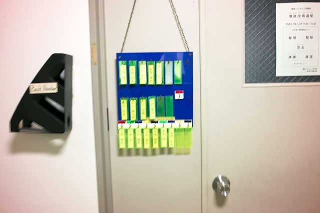
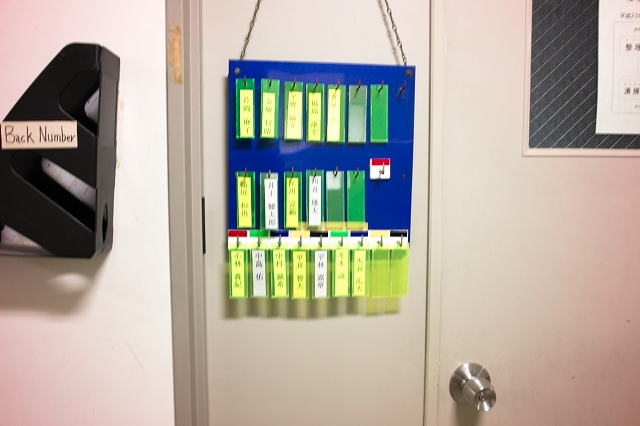
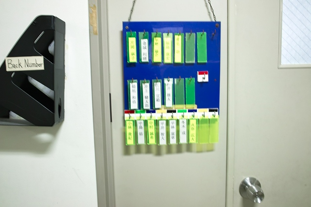
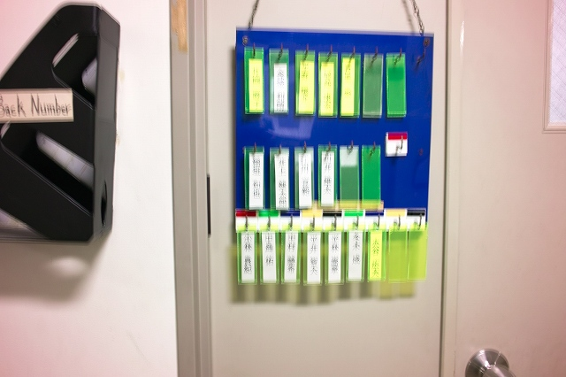

| ・9時 (H24.04.10) | |||
昨日の9時から来なアカン！という川崎先生の忠告はどれだけ伝わったんでしょうか？名誉のために補足しておくと、M2はK岡さんとF島くんは就活で午前中お休みの日です。M2は就活で研究ペースを乱さないように、M1はこれから週末報告会があるので研究ペースをつかむように、B4はメインは研究ということを忘れないように。今年はどうなる事やら。 |
|||
|

8:50 まぁ予想してたけど |

9:50 他のM1は1限 | ||
|

10:50 コアタイムは11:00-17:00ですが。。。 |

11:50 H野くんは規則正しく14:00-22:30 | ||